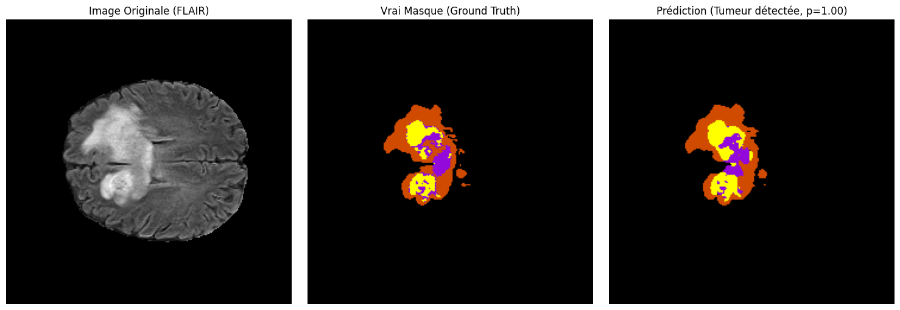

Computer Vision · Imagerie Médicale · Segmentation Sémantique
Segmenter avant de conclure
Un U-Net entraîné à délimiter les tumeurs cérébrales sur IRM, épaulé par une tête de classification qui vérifie d'abord qu'une tumeur est bien présente avant de laisser passer le masque de segmentation.
- PyTorch
- U-Net
- BraTS2020
- Dice Loss
Le contexte
Le problème à résoudre
Le jeu de données BraTS2020 contient des coupes d'IRM cérébrales multimodales (4 channels) accompagnées, pour chaque pixel, d'une étiquette parmi quatre classes : fond, cœur nécrotique, œdème péritumoral et tumeur réhaussée. L'objectif n'est plus de dire « il y a une tumeur ou non » comme dans une tâche de classification, mais de tracer son contour exact, pixel par pixel (l'information dont un radiologue a réellement besoin pour évaluer un volume tumoral ou planifier une intervention).
Le piège classique d'un U-Net entraîné seul sur ce type de données : il a tendance à faire apparaître de petits « masques fantômes » sur des coupes parfaitement saines, simplement parce qu'une partie du signal ressemble localement à de la texture tumorale. En imagerie médicale, ce genre de faux positif n'est pas anodin.
L'approche
Comment j'ai construit la solution
Pour éviter de mélanger les coupes d'un même patient entre train, validation et test (un piège classique qui gonfle artificiellement les scores), le split se fait au niveau du volume (le patient), pas de la coupe individuelle : 70 % des volumes pour l'entraînement, 15 % pour la validation, 15 % pour le test.
Le fond représentant l'écrasante majorité des pixels, j'ai rééquilibré le jeu d'entraînement en conservant toutes les coupes contenant une tumeur, et en ne gardant qu'un échantillon de 20 % des coupes entièrement saines. Le BraTSDataset lit chaque coupe depuis un fichier .h5, convertit le masque one-hot en un simple label de classe (0 à 3), et remet l'image au format canal-premier attendu par PyTorch.
class BraTSDataset(Dataset):
def __getitem__(self, idx):
with h5py.File(full_path, 'r') as f:
image = f['image'][()]
mask = f['mask'][()]
# One-hot (3 couches) -> label unique (0,1,2,3)
new_mask = np.zeros(mask.shape[:2], dtype=np.int64)
new_mask[mask[:,:,0] == 1] = 1 # Nécrotique
new_mask[mask[:,:,1] == 1] = 2 # Œdème
new_mask[mask[:,:,2] == 1] = 3 # Réhaussée
image = np.transpose(image, (2, 0, 1)) # HWC -> CHW
return torch.from_numpy(image).float(), torch.from_numpy(new_mask).long()Architecture hybride. Le cœur du modèle est un U-Net classique à quatre niveaux (64 → 128 → 256 → 512 canaux) avec un bottleneck à 1024 canaux et des connexions de saut (skip connections) vers chaque niveau du décodeur. La nouveauté est ailleurs : depuis le bottleneck, un global average pooling alimente une petite tête de classification (deux couches linéaires + dropout + sigmoïde) qui prédit une simple probabilité : « cette coupe contient-elle une tumeur ? ». En inférence, si cette probabilité passe sous 0,5, le masque de segmentation est purement et simplement mis à zéro, quoi qu'ait prédit le décodeur. C'est ce mécanisme de gating qui élimine les faux positifs sur tissu sain.
class UNetWithClassifier(nn.Module):
def forward(self, x):
# Encodeur + bottleneck
s1 = self.enc1(x); p1 = self.pool(s1)
s2 = self.enc2(p1); p2 = self.pool(s2)
s3 = self.enc3(p2); p3 = self.pool(s3)
s4 = self.enc4(p3); p4 = self.pool(s4)
bn = self.bottleneck(p4)
# Tête de classification (branchée sur le bottleneck)
cls_out = self.classifier(self.global_pool(bn))
# Décodeur avec skip connections
d4 = self.dec4(torch.cat([self.up4(bn), s4], dim=1))
d3 = self.dec3(torch.cat([self.up3(d4), s3], dim=1))
d2 = self.dec2(torch.cat([self.up2(d3), s2], dim=1))
d1 = self.dec1(torch.cat([self.up1(d2), s1], dim=1))
seg_out = self.final_conv(d1)
return seg_out, cls_outFonction de perte. Une Dice Loss pondérée par classe (poids 0,1 pour le fond, 1,0 pour les trois classes tumorales) gère le déséquilibre massif entre fond et tumeur. Elle est combinée à une BCE sur la sortie de classification, pondérée à 20 % : loss = dice_loss + 0.2 × bce_loss. Optimiseur Adam (lr=1e-4), avec un ReduceLROnPlateau qui réduit le taux d'apprentissage si la loss de validation stagne.
En validation, le Dice est calculé après le gating par classification (le masque prédit est multiplié par 0 ou 1 selon la sortie du classifieur) : la métrique reflète donc directement la performance du pipeline complet, pas seulement celle du décodeur seul.
Suivi de l'entraînement · 5 epochs
Loss d'entraînement et de validation à chaque epoch. Survolez la courbe pour voir la valeur exacte.
Résultats
Ce que le modèle donne en pratique
Dès la deuxième époque, le Dice sur le fond atteint 99,9 %, signe que le modèle a immédiatement compris où se trouve la grande majorité des pixels non-tumoraux. La vraie difficulté se lit sur la classe C1 (cœur nécrotique) : elle part de 0,403 à la première époque (la plus petite et la plus ambiguë des trois classes tumorales) puis grimpe à 0,79 dès l'époque 2 et s'y stabilise. La loss de validation, elle, plafonne autour de 0,60-0,61 après la première époque pendant que la loss d'entraînement continue de baisser : un signe classique de début de sur-apprentissage, malgré lequel le Dice de validation continue de progresser légèrement jusqu'à l'époque 4, meilleure époque sauvegardée avec un Dice moyen tumeur de 0,8099.

Ce que j'ai retenu
Le vrai apprentissage
Ce projet m'a surtout montré l'intérêt de séparer explicitement « y a-t-il une tumeur ? » de « où est-elle exactement ? ». Un U-Net seul, entraîné à minimiser une Dice Loss globale, n'a aucune incitation directe à produire un masque parfaitement vide sur une coupe saine (un léger bruit suffit à faire apparaître quelques pixels prédits à tort). En greffant une tête de classification légère sur le bottleneck et en l'utilisant comme filtre à l'inférence, on obtient une sécurité supplémentaire à un coût d'entraînement quasi nul, puisqu'elle partage l'essentiel de l'encodeur avec la tâche de segmentation.
Sur le plan pratique, pondérer la Dice Loss par classe (fond à 0,1) a été indispensable : sans cette pondération, le modèle aurait toute latitude pour ignorer les classes minoritaires tout en gardant une loss globale très basse. Enfin, le split par patient plutôt que par coupe individuelle reste, à mon sens, le détail méthodologique le plus facile à oublier, et le plus dangereux si on l'oublie, tant il peut artificiellement gonfler les métriques de validation.